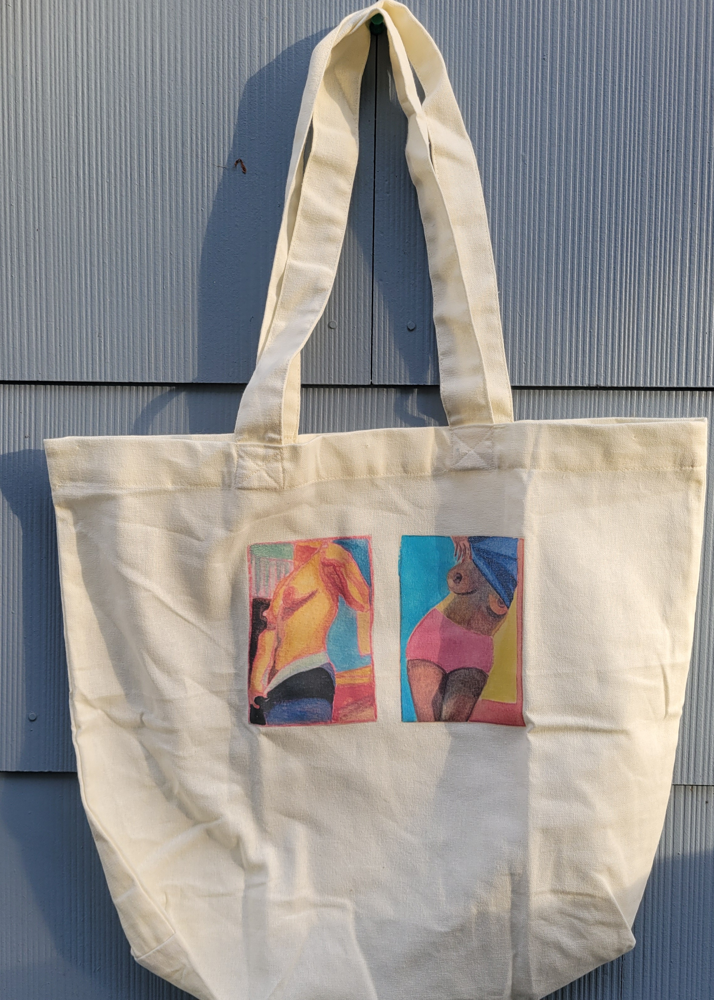
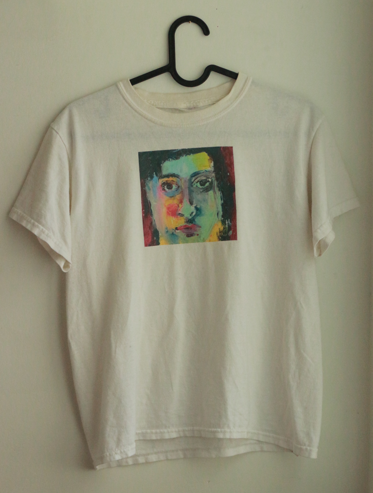

Vancouver is a settler colonial city occupying the unceded and ancestral territory of the xʷməθkʷəy̓əm (Musqueam), Sḵwx̱wú7mesh (Squamish), and səlilwətaɬ (Tsleil-Waututh) Nations. Urban development since the 1800s has reshaped the contours of land and water, filling in much of the local tidal flat and paving over many streams. Today, streets and alleyways extend like asphalt riverbeds along whose shorelines the excess of human consumption accumulates for disposal. Discarded matters evince spectacular abundances. Crows feast on overflowing human remains. Garbage is composition awaiting compaction.
In the above sitation, garbage overflows from two green commercial dumpsters. Spilling from torn bags, various containers and food waste litter the asphalt as crows perch amid the detritus. Photograph taken in alleyway in the West End taken on a Christmas Day walk, 2023.
The decadence of disposal is ripe with contamination. Graffiti transforms commercial dumpsters, newspaper boxes, utility boxes, street signs, and the sides of vacant storefronts into sites of discordant discourses. I follow their drift across the city. On a walk to the grocers last month as I was contemplating what to share with you today, I encountered something new: An Economy Is A Soul/Spirit/Love.
Not only municipal waste defies containment. Residential curbs mark porous boundaries of property where belonging is in flux. Operating on urban denizens’ tacit knowledge of the city, matters deemed no longer fit for manufactured purpose are offered up as open-ended invitations for recirculation by passersby. Half my wardrobe I gleaned from cardboard boxes left on the sidewalk or by back-alley dumpsters, pinned to trees or tossed over fences. A fleece vest, vintage dress, quarter zip, jeans, sweatpants, and sneakers to name but a few. Items found whilst walking the city now collaborators in my everyday research and writing practices include a coffee mug, backpack, stapler, desk, and Epson WorkForce Pro 4740 printer found with a note reading: I STILL WORK.
Urban shorelines prove sites of leaky disposal where use and value are rendered differently intelligible by human and more-than-human scavengers. Like the crows, I poach matter and meaning from what I find around, performing bricolage with the physical-conceptual field of my encounter. How do unruly material and semiotic flows interfere with regulated forms of exchange from within the dominate system? In this presentation, I draw from my ongoing research-creation to explore how my everyday gleaning practices disrupt hegemonic economies of knowledge production in ways that matter.
What could it mean to think with place? to feel the city? My master's research-creation has been an exploration and response to this question through deep mapping, or situated, embodied inhabitation as a practice of ongoing and open ended dialogue with the world. Deep mapping eludes operationalization in its interpretive capaciousness (Roberts 2016; Modeen and Biggs 2020), though disorientation is an excellent state wherein to begin. To be grasped requires surrendering agency as a property of the individual. It entails an openness to defamiliarization, an attention to alternate perceptual scales, a porosity to cathect and be affected. Deep mapping does not render down to a map in the sense of a Cartesian cartography, where, as de Certeau points out, action is made legible by the substitution of trace for practice (1984, 97). Yet neither does it counter cartography. In my theorization, deep mapping is not defined through opposition so much as marked by iterative acts of interference with hegemonic forms of representing place, producing geographic knowledge, and rendering spatial research public. The past three years of my masters have amounted to cultivating a practice of deep mapping, theorizing my interpretation of this capacious practice through practice, and enacting my theory as praxis. I will submit as my thesis a website where text and multimedia are integrated together. What I share with you today emerges from this deeper investigation into intelligibility in academia. My reference to hegemonic economies of knowledge production is specific to the formal requirements of institutional publishing that render research legible as an object of knowledge, and the boundary making practices by which field and researcher are made differentially articulate.
In both field research and website creation, I employ spatial bricolage––the poetics of ‘making do’ with what tools, skills, and materials are readily available (Roberts 2018a). In my research, I take and make do with what has been disposed of, discarded, and/or freely given. I appropriate tools, skills, and resources garnered through formal means for alternate purposes. Gleaning is the related practice of gathering information or materials from one's surroundings. Les Roberts refers to "gleaning as a spatial praxis" (Roberts 2018x, 57). For example, over the summer a friend of mine asked if I would print my artwork on a tote bag. Looking into numerous custom printing websites, it seemed that with the complexity of my designs and color palette, a single bag would cost me over fifty dollars. Unsure what to do, I then remembered seeing blank canvas tote bags for sale at a nearby crafts store. I also remembered that as a kid, my baba had helped me print my drawings of dinosaurs onto transfer paper which I'd ironed onto T-shirts. I thought, why not print my own tote bags?

I soon began experimenting with clothing, printing on T-shirts that were gifted to me or that I scavenged from the fabric recycling dumpster in the basement of my building.

I printed my designs using the printer I gleaned from the alleyway, and appropriated part of a research grant to buy transfer paper and printer ink. I also bought yarn and crochet hooks with which to make vests using patterns i learn from YouTube. These crafting capers may seem like unrelated hobbies, but for me, they demonstrate putting theory into practice. Additionally, handwork helps me modulate my attention, and is therefore a tactic of thinking and writing my research-creation. In this sense, I invoke the creative humanities by “making as/through thinking and thinking as/through making” (van der Tuin and Verhoeff 2022, 2).
Les Roberts notes that "the researcher-as-bricoleur" is "equipped with a set of tools rather than a fit-for-purpose methodological strategy" (2018a, 54). Thus in my research-creation I employ tactics. Tactics are methods whose validity is measured by their applicability to the situation at hand (Roberts 2018b). In The Practice of Everyday Life (1984), Michel de Certeau describes everyday practices such as talking, reading, and moving about as tactical, “ways of operating” the Greeks called mētis (xix). James Scott (1998) elaborates mētis as practical knowledge. In contrast with epistemologies that are abstract, general, and universal, practical knowledge is experiential, situated, and local (Scott 1998, Chapter 9). Tactics deploy practical knowledge. The tactics of everyday practices are opportunistic; appropriating the hegemonic system from within, such “surreptitious creativities” form a “proliferating illegitimacy” which resists the authority that seeks their administration or suppression (de Certeau 1984, 96).
A year and a half ago I sat with a group of economic geographers at Koerner's, a pub five minutes walk from our department. My then interlocutor who studies economic geography and the political economy of land asked me if and how I saw myself participating in the economy whilst deep mapping. Never having considered this, I responded, "Not really… well, maybe when I buy something?" "Read Priti and Emily's paper From crisis to the everyday: Shouldn't we all be writing economies?" she told me, "It's everything."
Priti Narayan and Emily Rosenman (2022) unsettle notions of expertise located in the academic, urging a reorientation to writing economic geography that recognizes how "knowledge production about the economy is already embedded in the economy itself… " (393). They problematize how and knowledge is made legible as 'economic' within academia. What counts as economic geography is often what is written and cited by established economic geographers, quote, "as if economics is not about how we, we all, live in the everyday" (Narayan and Rosenman 2022, 399). Though I am not situated within the subdiscipline of economic geography, as graduate student researcher, I have found myself to be embedded in economies of academic knowledge production. This realization led me to consider why it matters that I intentionally think and write about geographic knowledge production through everyday practices of urban inhabitation, and do so in material and semiotic dialogue with the physical-conceptual field of my encounter. For me, the field is not a site separate from the desk at which I produce geographic knowledge and render my spatial research public. Being ADHD, I require hard copies of texts to read; my printer is therefore not an indulgent accessory but interlocutor in my knowledge production. It matters whom I think with and how I acknowledge intellectual others.
Drawing from Karen Barad (2007), I recognize the boundary between agencies of observation and object of observation is marked by 'intra-actions' within and as part of phenomena. In other words, the researcher equipped with tactics of investigation and the fieldsite do not interact as independent relata but are rather made differentially intelligible through boundary making practices such as writing and citation. An objective account therefore requires the referent be a phenomenon. The field, the city, a thesis, this presentation––all are phenomenon within which "Knowing is a distributed practice that includes the larger material arrangement" (Barad 2007, 342). Knowledge produced from within and as part of the city cannot therefore be referenced in abstraction.
Yesterday I passed the graffiti proposing an economy as a soul/spirit/love. It had been circled and black and orange scrawls covered all but love.
Citation is a form of address, a formal acknowledgement of an other within the written conversation of an academic text. In my thesis, I propose sitation with an 's' as an alternative boundary making practice to citation. Sitation assumes field and researcher to be to be provisional configurations, the formal acknowledgement of encounter within an academic work that which renders interlocutors differentially determinate. Whereas citation cites interaction, sitation sites 'intra-action' (Barad 2007).
Rosenman and Narayan argue that reimagining the subdiscipline for a 'public economic geography' would entail "serious consideration of authorship, audience, citations, methods, modes and targets of publication…. beyond academic categories and methods employed so far" (401?). They are clear that "Praxis cannot be located in simply the study of economy, or in proposing alternatives, but in actually enacting writing and knowledge production differently, bearing in mind its material and political consequences" (Narayan and Rosenman 2022, 400, emphasis in original). I am not arguing that what I do is necessarily public economic geography but rather that If economics is about how we live in the everyday (Narayan and Rosenman 2022), then deep mapping is a performative practice for enacting diverse economies (Gibson-Graham 2008). My understanding of what counts as an economy has evolved since I was first asked about my participation. My deep mapping practice at once interfere with hegemonic economy by poaching skills/materials/resources from the dominate capitalist system, and enacts/forges an alter-economy through siting a posthuman public articulated through distributed thinking. Thus, my everyday gleaning practices I participate in unruly metabolisms that at once disrupt and interfere with hegemonic economies of academic/geographic knowledge production.
Barad, Karen. 2007. Meeting the Universe Halfway: Quantum Physics and the Entanglement of Matter and Meaning. Durham, NC: Duke University Press.
Certeau, Michel de. 1984. The Practice of Everyday Life. Translated by Steven Rendall. Berkeley: University of California Press.
Modeen, Mary, and Iain Biggs. 2020. Creative Engagements with Ecologies of Place: Geopoetics, Deep Mapping and Slow Residencies. London: Routledge. https://doi.org/10.4324/9781003089773.
Narayan, Priti, and Emily Rosenman. 2022. “From Crisis to the Everyday: Shouldn’t We All Be Writing Economies?” Environment and Planning A: Economy and Space 54 (2): 392–404. https://doi.org/10.1177/0308518X211068048.
Gibson-Graham, J. K. 2008. “Diverse Economies: Performative Practices for ‘Other Worlds.’” Progress in Human Geography 32 (5): 613–32. https://doi.org/10.1177/0309132508090821.